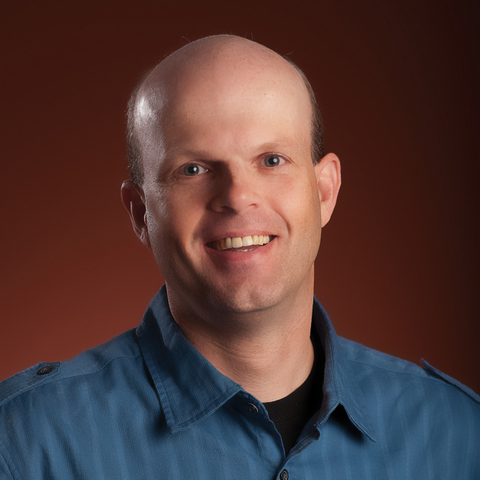
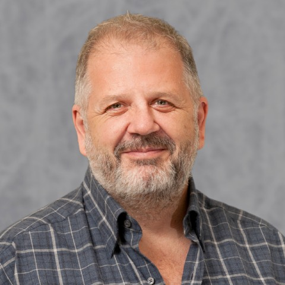

What Makes Expert Software Designers Successful?

Speaker: André van der Hoek, University of California
Abstract: Much goes into being a great designer: knowing the domain inside and out, understanding design thinking, and, yes, being intimately familiar with the technology at hand. Crucially important, however, is the ability to effectively keep a steady mind and balance multiple perspectives in a world of uncertainty, constant change, and competing demands on the design under consideration.
What exactly sets expert software designers apart, and what makes them have enduring design success regardless of the technology or infrastructure du jour, is the topic of this talk. Based upon decades of observations, conversations, interviews, and empirical studies of software designers ‘in action’, we present key insights into their thought and decision-making processes, use and non-use of notations, reliance on colleagues, and more.
The talk is structured into three parts. The first part presents a framework for understanding design as an activity in which humans engage, and why it is turning out to be so difficult. The second part tours existing support - tools and methods - for design and explains why not one is a silver bullet. The third part, then, looks at the practices of expert software designers and how these help them be successful, time and again.
Bio: André van der Hoek serves as chair of the Department of Informatics at the University of California, Irvine and heads the Software Design and Collaboration Laboratory, which focuses on understanding and advancing the roles of design, collaboration, and education in software engineering. He is co-author of 'Software Design Decoded: 66 Ways How Experts Think' and co-editor of 'Studying Professional Software Design: a Human-Centric Look at Design Work', two unique books that detail the expert practices of professional software designers.
He was recognized as an ACM Distinguished Scientist in 2013 and received the Premier Award for Excellence in Engineering Education Courseware in 2009. He is the principal designer of the B.S. in Informatics at UC Irvine and was honored, in 2005, as UC Irvine Professor of the Year for his outstanding and innovative educational contributions.
He holds a joint B.S. and M.S. degree in Business-Oriented Computer Science from Erasmus University Rotterdam, the Netherlands, and a Ph.D. degree in Computer Science from the University of Colorado at Boulder.
SE for AI: ethics is a choice and not choosing is unethical (or, If Deep Learning is the answer, what was the question?)

Speaker: Prof. Tim Menzies, (Ph.d. UNSW, 1995, Full Professor NC State University, Computer Science, IEEE Fellow)
Abstract: Much has been talked about AI for SE, but what about the other way around? AI software is still software. And software needs maintenance, validation, interfacing, usability additions, etc. That is why AI software needs software engineers! And not only that, AI software offers special functions that need specialized approaches by software engineers. So what does engineering look like when applied to AI?
What I will argue is that AI is all about reflecting over choices. Given models and data there are so many choices in how we make sense of that data-- some of which support ethical non-functional requirements. The good news is that, using AI, we can get better at making those choices. The bad news is that only a minority of those choices support the goals we want to achieve-- which means that if we choose at random, we probably will not get want we want. Hence: ethics is a choice and not choosing is unethical.
Bio: Tim Menzies (IEEE Fellow, Ph.D., UNSW, 1995) is a full Professor in CS at North Carolina State University where he teaches software engineering, automated software engineering, and foundations of software science. He is the directory of the RAISE lab (real world AI for SE) that explores SE, data mining, AI, search-based SE, and open access science.
He is the author of over 250 referred publications and editor of three recent books summarized the state of the art in software analytics. In his career, he has been a lead researcher on projects for NSF, NIJ, DoD, NASA, USDA (funding totalling 11 million dollars) as well as joint research work with private companies. For 2002 to 2004, he was the software engineering research chair at NASA's software Independent Verification and Validation Facility.
Prof. Menzies is the co-founder of the PROMISE conference series devoted to reproducible experiments in software engineering. He is an associate editor of IEEE Transactions on Software Engineering, Communications of the ACM, ACM Transactions on Software Engineering Methodologies, Empirical Software Engineering, the Automated Software Engineering Journal the Big Data Journal, Information Software Technology, IEEE Software, and the Software Quality Journal. In 2015, he served as co-chair for the ICSE'15 NIER track. He has served as co-general chair of ICSME'16 and co-PC-chair of SSBSE'17, and ASE'12. For more, see his vita or his list of publications at http://tiny.cc/timpubs or his home page.
Building a bank outside-in: The challenges evolving Nubank to millions of customers and multiple products
Speakers: Alexandre Freire and Henrique Alves, NuBank
Abstract: As a small startup without all the necessary banking licenses to do everything a bank can do from day one, Nubank focused on user experience and customer service, building a mobile first "shell" that delighted customers and hid away a dependency on many third parties to effectively operate a credit card product.
As the company grows and more products are launched, Nubank is increasingly absorbing the responsibilities of previous partners. Now with all the necessary legal requirements to become a complete financial institution, we tackled the challenge of decoupling from partners and building direct integrations with the Brazilian Financial System.
How to replace mission critical systems, stay compliant in a regulated industry, and at the same time scale an operation for more than 20MM customers?
In this talk we'll discuss challenges and learnings from having to re-architecture our most important and central systems: changing data entities, scalability requirements, processing time, removing cyclic dependencies and applying DDD to split some legacy "macro-services", while continuing to provide brazilians with quality financial products like credit cards, savings accounts and personal loans.
Alexandre Freire's Bio: Alex has experienced many phases of the Software Engineering Industry's history: programmed websites as a cowboy in the '95 bubble; worked diligently in an Italian multinational software house using waterfall and suffered when the world's first social network never made it to production; fell in love with eXtreme Programming and for individuals and their interactions; decided to become a specialist in agile methodologies and has a Masters in Computer Science by IME-USP on patterns to teach teams to become agile; funded Agilbits and AgilCoop, helped many companies grow in Brazil from small startups to giants like Locaweb and Globo.com. Taking agile principles at heart he applied them in the Ministry of Culture to create the Digital Culture Hotspots program working with Minister Gilberto Gil and even built a house in Ilhabela using agile principles. While In California with Industrial Logic he worked with world renowned experts and led teaching and coaching initiatives in companies like GE, HP, Ford, IBM and Netflix. Now he's back in Brazil as a Director of Engineering at Nubank, leading one of the best software engineering teams in the country to delight customers while freeing them from complexity so they can have control of their financial lives.
Henrique Alves's Bio: Henrique has 11 years experience as a software engineer, having worked in a variety of projects including machine learning, geolocation systems, SaaS platforms and custom content management systems for high-traffic websites. For the past 5 years he has seen Nubank grow a hundred-fold, helped build the first risk models and the delivery of a great customer experience, and is currently working on financial systems at the core of the business.